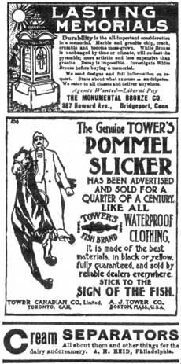
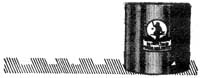

The following pages are taken from The Prairie Farmer, Green's Fruit Grower, and The Farm Journal dated 1911 to 1943
Inexpensive but pleasing Gifts.
SARAH RODNEY.
Expensive, elaborate articles are frequently not as pretty or useful as those which cost much less. Often a small gift, artistically made, and given with the true kindly spirit of Christian love, carries more good will with it, both to the recipient and giver than more costly gifts. To many it is humiliating to receive costly gifts, when their own circumstances will not permit making a similar return.
If you wish to give a girl or young woman a small, acceptable gift, find out if she has a pretty dressing sacque. This suggestion, as all of the following, are for those who have the time to make their Christmas presents. Dressing sacques are really easily made, and convey warmth and comfort as well as pleasure in their loose folds. If you can afford it, of course eider down is best for winter wear, but pretty outing flannel, which only costs 10 cents per yard, is very serviceable. Choose some dainty color. Get a pattern if you are not an adept at dressmaking, though the ordinary shirtwaist pattern will answer for many to work with, allowing the sacque to be a trifle longer and fuller. Tucks or pleats are a matter of choice. Trim the collar with lace and cat-stitch down the front and around the bottom with silk which harmonizes with the material used. If you cannot turn out an attractive gift, with little expense, which will carry unlimited good will and pleasure with it, I am very much mistaken.
I know of a very pretty sacque which was a dear little girl's Christmas remembrance, from an extremely wealthy friend. It gave as much pleasure as jewels, or even more, for it carried no weight of being too much remembered. This sacque was made from pale blue and white dimity, trimmed with lace.
Crocheted and knitted bedroom slippers, or bed socks without soles, make acceptable gifts. Shawls or shoulder capes are warm and comfortable through the long, cold winter months. A stocking bag made from colored cretonne or denim forms a very useful gift for a busy housewife, with many heelless stockings for her fireside companions.
Rockefeller Began His Career at $4 a Week.
The November "American Magazine" contains a very remarkable sketch of John D. Rockefeller, written by H. M. Briggs, who was the oil king's friend and his personal body guard for many years. Of the many intimate anecdotes which Mr. Briggs tells of Rockefeller the following is not one of the least interesting:
"One day while crossing the viaduct in Cleveland, Mr. Rockefeller stood up in the auto car and cried: 'Mr. Briggs, look! look! that triangular building; I commenced my career there at $4 a week."
Kansas newspapers are getting a lot of pleasure out of this incident, which is said to have actually happened in an eastern Kansas county. A farmer received a note from a young man who; had been "going with" his daughter. It read: "Dear Sur: Wood like your dauters hand in marriage. She and me are in luve. I think I neede a wife. Yures trooly."
The farmer replied by letter, saying. "Friend: You don't need a wife. You need a spelling book. Get one and study it a year, Then write me again. Kansas City "Journal,"
Ten Commandments for Farm Husbands
1. Thou shalt remember that the woman thou hast married is thy wife and not thy hired girl, that she is thy helpmeet, but not a slave to toil for thee.
2. Thou shalt not build a woman-killer house, but one so small that it will be a pleasure for thy wife to keep it in apple-pie order. Forget not also that running water is as much needed at the house as in the barn and that a washing-machine is as necessary to thy wife as a horsefork is to thee.
3. Thou shalt not ask thy wife to help with the milking that thou mayest the earlier drive to town to lodge. It is enough for thy wife to look after the house, and do thou look after the work of the barn and of the farm.
4. Thou shalt see to it that thy wife never has to ask thee for money either for the house or for herself. Is she not a partner with thee in the farm enterprise? Let her share of the farm income be generous, to spend as may please her best.
5. Thou shalt remember that when thou dost hire extra men to make thy work light, that they make thy wife's work heavy unless thou dost secure for her extra help.
6. Thou shalt keep a gentle horse that thy wife may drive to the ladies' aid, and when thou art waxing prosperous thou shalt buy for her a flivver.
7. Thou shalt mow the front lawn and make all of the surroundings of the house as attractive as the interior has been made beautiful by thy wife.
8. Thou shalt sometimes say to thy wife at her busy seasons like house-cleaning time, "Do not bother to cook dinner today, let us have a meal of bread and mill:."
9. Thou shalt remember that cooking, dishwashing, sweeping and mending grow monotonous, and that thy wife needs a frequent change and vacation. See that she goes visiting, takes a trip to the city, or gets recreation in some other way that pleases her better.
10. Thou shalt be good-nature and cheery and kind. Thou didst win thy wife by devotion, keep her love by thy tender consideration. J. Elmer Russell.
Figure on Painting This Spring
A second short flax crop keeps linseed oil up, but the increase in price in pure white lead paint is not so great as you may fear.
Get at your dealer's the cost of 100 pounds of "Dutch Boy Painter" White Lead, 4 gals. pure linseed oil, 1 gal. turpentine, 1 pint turpentine drier-this makes 8 gallons of old-fashioned paint.
Compare this cost, either by the gallon or by the job, with what you used to pay for paint.
You'll find the difference so small that you can't afford to put off painting, or to paint with anything except "Dutch Boy Painter" White Lead. Write for free " Painting Helps No. 148
NATIONAL LEAD COMPANY
Offices to the following cities:
New York
Boston
Buffalo
Cincinnati
Cleveland
St. Louis
San Francisco
(John T. Lewis & Bros. Co., Philadelphia)
(National Lead and Oil Co., Pittsburgh
|
|
 |
 |